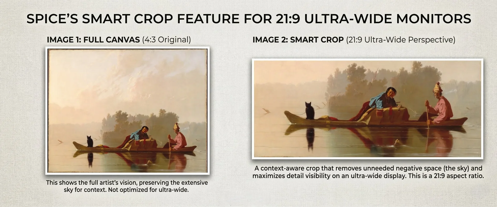

How It Works
Choose Your Sources
Pick from 8+ providers — Wallhaven, Pexels, Google Photos, The Met, Art Institute of Chicago, Wikimedia, local folders, or your favorites collection.
Set Your Schedule
Rotate every 15 minutes, hourly, daily — or skip the timer and change wallpapers on-demand with global keyboard shortcuts.
Enjoy
Spice runs silently in your macOS menu bar or Windows system tray. Your desktop stays fresh without lifting a finger.
🔄 Auto-Cycling
Set your interval and Spice rotates wallpapers automatically. Your desktop stays fresh without lifting a finger.
🖥️ Multi-Monitor
Independent wallpapers for every display. Portrait monitors get portrait art. Ultrawide gets ultrawide compositions.
🔗 Browser Extension
See a wallpaper you love online? One click sends it straight to your desktop via Chrome, Firefox, or Safari.
📸 8+ Sources
Wallhaven, Pexels, Google Photos, The Met, Art Institute of Chicago, Wikimedia Commons, local folders, and favorites.
🧠 Smart Fit
Intelligent cropping detects faces and compositions, ensuring every wallpaper looks perfect on your exact screen resolution.
⌨️ Global Hotkeys
Next, previous, favorite, or block — control your wallpapers from anywhere with customizable keyboard shortcuts.
Smart Fit Technology
Spice intelligently crops wallpapers to match your exact display — even ultrawide 21:9 monitors.

Companion Browser Extension
One-click any image online and send it straight to your desktop.